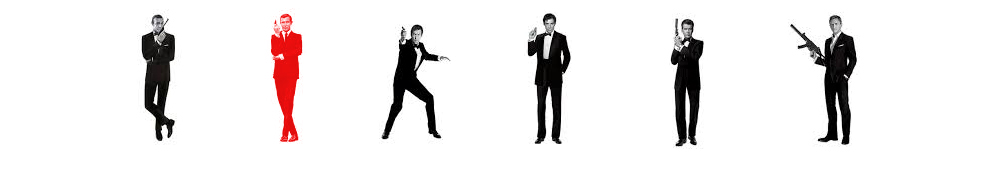
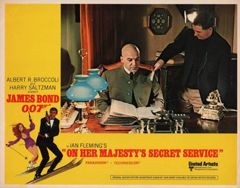
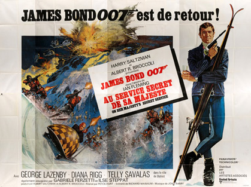
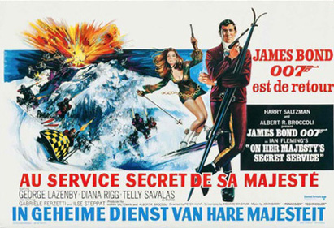
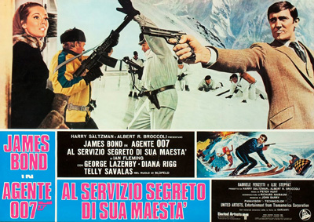

Albert R. Broccoli
Richard Maibaum
Simon Raven
In Portugal, James Bond – agent 007, sometimes referred to simply as '007' – saves a woman on the beach from committing suicide by drowning, and later meets her again in a casino. The woman, Contessa Teresa "Tracy" di Vicenzo, invites Bond to her hotel room to thank him, but when Bond arrives he is attacked by an unidentified man. After subduing the man, Bond returns to his own room and finds Tracy there, who claims she didn't know the attacker was there. The next morning, Bond is kidnapped by several men, including the one he fought with, who take him to meet Marc-Ange Draco, the head of the European crime syndicate Unione Corse. Draco reveals that Tracy is his only daughter and tells Bond of her troubled past, offering Bond one million pounds if he will marry her. Bond refuses, but agrees to continue romancing Tracy if Draco reveals the whereabouts of Ernst Stavro Blofeld, the head of SPECTRE.
Bond returns to London, and after a brief argument with M at the British Secret Service headquarters, heads for Draco's birthday party in Portugal. There, Bond and Tracy begin a whirlwind romance, and Draco directs the agent to a law firm in Bern, Switzerland. Bond investigates the office of Swiss lawyer Gumbold, and learns that Blofeld is corresponding with London College of Arms' genealogist Sir Hilary Bray, attempting to claim the title 'Comte Balthazar de Bleuchamp'.
Posing as Bray, Bond goes to meet Blofeld, who has established a clinical allergy-research institute atop Piz Gloria in the Swiss Alps. Bond meets twelve young women, the "Angels of Death", who are patients at the institute's clinic, apparently cured of their allergies. At night Bond goes to the room of one patient, Ruby, to seduce her. At midnight Bond sees that the 12 ladies go into a sleep-induced hypnotic state while Blofeld gives them audio instructions for when they return home. In fact, the women are being brainwashed to distribute bacteriological warfare agents throughout the world.
Bond tries to trick Blofeld into leaving Switzerland so that MI6 can arrest him without violating Swiss sovereignty. Blofeld refuses and Bond is eventually caught by henchwoman Irma Bunt. Blofeld reveals that he identified Bond after his attempt to lure him out of Switzerland, and tells his henchmen to take the agent away. Bond eventually makes his escape by skiing down Piz Gloria while Blofeld and his men give chase. Arriving at the village of Lauterbrunnen, Bond finds Tracy and they escape Bunt and her men after a car chase. A blizzard forces them to a remote barn, where Bond professes his love to Tracy and proposes marriage to her, which she accepts. The next morning, as the flight resumes, Blofeld sets off an avalanche; Tracy is captured, while Bond is buried but manages to escape.
Back in London at M's office, Bond is informed that Blofeld intends to hold the world to ransom by threatening to destroy its agriculture using his brainwashed women. Apart from money, Blofeld demands amnesty for all past crimes and to be recognised as Count de Bleuchamp. M tells 007 that the ransom will be paid and forbids him to mount a rescue mission. Bond then enlists Draco and his forces to attack Blofeld's headquarters, while also rescuing Tracy from Blofeld's captivity. The facility is destroyed, and Blofeld escapes the destruction alone in a bobsleigh, with Bond pursuing him. The chase ends when Blofeld becomes snared in a tree branch and injures his neck. Bond and Tracy eventually get married in Portugal, then drive away in Bond's Aston Martin. When Bond pulls over to the roadside to remove flowers from the car, Blofeld (wearing a neck brace) and Bunt open fire on the couple's car. Bond survives, but Tracy is killed in the attack. When a police officer arrives to help, a tearful Bond cradles Tracy's body and says: "It's all right. It's quite all right, really. She's having a rest. We'll be going on soon. There's no hurry you see, we have all the time in the world."
In 1967, after five films, Sean Connery resigned from the role of James Bond and - during the filming of You Only Live Twice - was not on speaking terms with Albert Broccoli. The confirmed front runners were Englishman John Richardson, Dutchman Hans De Vries, Australian Robert Campbell, Englishman Anthony Rogers and Australian George Lazenby.
Broccoli and Hunt eventually chose Lazenby after seeing him in a Fry's Chocolate Cream advert. Lazenby dressed the part by sporting several sartorial Bond elements such as a Rolex Submariner wristwatch and a Savile Row suit (ordered for, but uncollected, by Connery), and going to Connery's barber at the Dorchester Hotel. Broccoli noticed Lazenby as a Bond-type man based on his physique and character elements, and offered him an audition. The position was consolidated when Lazenby accidentally punched a professional wrestler, who was acting as stunt coordinator, in the face, impressing Broccoli with his ability to display aggression. Lazenby was offered a contract for seven films; however, he was convinced by his agent Ronan O'Rahilly that the secret agent would be archaic in the liberated 1970s, and as a result he left the series after the release of On Her Majesty's Secret Service in 1969.
For Tracy Draco, the producers wanted an established actress opposite neophyte Lazenby. Brigitte Bardot was invited but, after she signed to appear in Shalako opposite Sean Connery, the deal fell through and Diana Rigg - who had already been the popular heroine Emma Peel in The Avengers - was cast instead. Rigg said one of the reasons for accepting the role was that she always wanted to be in an epic film. Telly Savalas was cast following a suggestion from Broccoli, and Peter R. Hunt's neighbour George Baker was offered the part of Sir Hilary Bray. Baker's voice was also used when Lazenby was impersonating Bray, as Hunt considered Lazenby's imitation not convincing enough. Gabriele Ferzetti was cast as Draco after the producers saw him in We Still Kill the Old Way, but Ferzetti's heavy Italian accent also led to his voice being redubbed by English actor David de Keyser for the final cut.
Principal photography began in the Canton of Bern, Switzerland, on 21 October 1968, with the first scene shot being an aerial view of Bond climbing the stairs of Blofeld's mountain retreat to meet the girls. The scenes were shot at the revolving restaurant Piz Gloria, located atop the Schilthorn near the village of Mürren. The location was found by production manager Hubert Fröhlich after three weeks of location scouting in France and Switzerland. The restaurant was still under construction, but the producers found the location interesting, and had to finance providing electricity and the aerial lift to make filming there possible. Various chase scenes in the Alps were shot at Lauterbrunnen and Saas-Fee, while the Christmas celebrations were filmed in Grindelwald, and some scenes were shot on location in Bern. Production was hampered by weak snowfall which was unfavourable to the skiing action scenes. The producers even considered moving to another location in Switzerland, but it was taken by the production of Downhill Racer. The Swiss filming ended up running 56 days over schedule. In March 1969, production moved to England, with London's Pinewood Studios being used for interior shooting, and M's house being shot in Marlow, Buckinghamshire. In April, the filmmakers went to Portugal, where principal photography wrapped in May. The pre-credit coastal and hotel scenes were filmed at Hotel Estoril Palacio in Estoril and Guincho Beach, Cascais, while Lisbon was used for the reunion of Bond and Tracy, and the ending employed a mountain road in the Arrábida National Park near Setúbal. Harry Saltzman wanted the Portuguese scenes to be in France, but after searching there, Peter R. Hunt considered that not only were the locations not photogenic, but were already "overexposed".
While the first unit shot at Piz Gloria, the second unit, led by John Glen, started filming the ski chases. The downhill skiing involved professional skiers, and various camera tricks. Some cameras were handheld, with the operators holding them as they were going downhill with the stuntmen, and others were aerial, with cameramen Johnny Jordan - who had previously worked in the helicopter battle of You Only Live Twice - developing a system where he was dangled by an 18 feet (5.5 m) long parachute harness rig below a helicopter, allowing scenes to be shot on the move from any angle. The bobsledding chase was also filmed with the help of Swiss Olympic athletes, and was rewritten to incorporate the accidents the stuntmen suffered during shooting, such as the scene where Bond falls from the sled. Blofeld getting snared with a tree was performed at the studio by Savalas himself, after the attempt to do this by the stuntman on location came out wrong. Glen was also the editor of the film, employing a style similar to the one used by Hunt in the previous Bond films, with fast motion in the action scenes and exaggerated sound effects.
The avalanche scenes were due to be filmed in co-operation with the Swiss army who annually used explosions to prevent snow build-up by causing avalanches, but the area chosen naturally avalanched just before filming. The final result was a combination of a man-made avalanche at an isolated Swiss location shot by the second unit, stock footage, and images created by the special effects crew with salt. The stuntmen were filmed later, added by optical effects. For the scene where Bond and Tracy crash into a car race while being pursued, an ice rink was constructed over an unused aeroplane track, with water and snow sprayed on it constantly. Lazenby and Rigg did most of the driving due to the high number of close-ups.
For the cinematography, Hunt aimed for a "simple, but glamorous like the 1950s Hollywood films I grew up with", as well as something realistic, "where the sets don't look like sets". Cinematographer Michael Reed added he had difficulties with lighting, as every set built for the film had a ceiling, preventing spotlights from being hung from above. While shooting, Hunt wanted "the most interesting framings possible", which would also look good after being cropped for television.
Lazenby said he experienced difficulties during shooting, not receiving any coaching despite his lack of acting experience, and with director Hunt never addressing him directly, only through his assistant. Lazenby also declared that Hunt also asked the rest of the crew to keep a distance from him, as "Peter thought the more I was alone, the better I would be as James Bond." Allegedly, there also were personality conflicts with Rigg, who was already an established star. However, according to director Hunt, these rumours are untrue and there were no such difficulties - or else they were minor - and may have started with Rigg joking to Lazenby before filming a love scene "Hey George, I'm having garlic for lunch. I hope you are!" Hunt also declared that he usually had long talks with Lazenby before and during shooting. For instance, to shoot Tracy's death scene, Hunt brought Lazenby to the set at 8 o'clock in the morning and made him rehearse all day long, "and I broke him down until he was absolutely exhausted, and by the time we shot it at five o'clock, he was exhausted, and that's how I got the performance." Hunt said that if Lazenby had remained in the role, he would also have directed the successor film, Diamonds Are Forever, and that his original intentions were concluding the film with Bond and Tracy driving off following their wedding, saving Tracy's murder for the pre-credit sequence of Diamonds Are Forever. The idea was discarded after Lazenby quit the role.
On Her Majesty's Secret Service was the longest Bond film until Casino Royale was released in 2006. Despite that, two scenes were deleted from the final print: Irma Bunt spying on Bond as he buys a wedding ring for Tracy, and a chase over London rooftops and into the Royal Mail underground rail system after Bond's conversation with Sir Hilary Bray was overheard.



